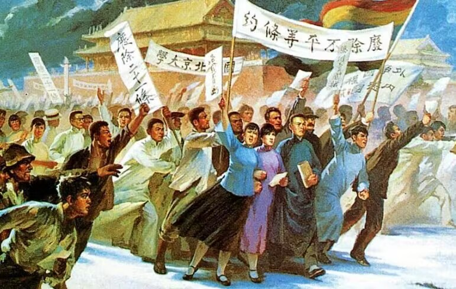
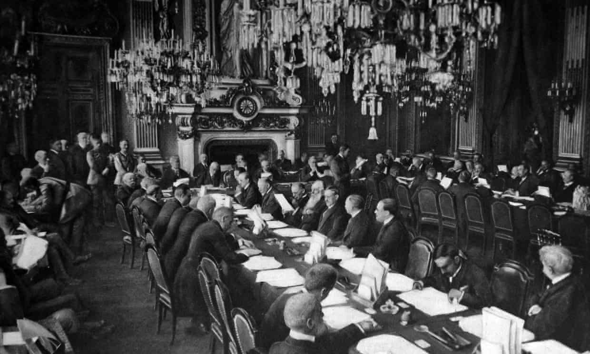
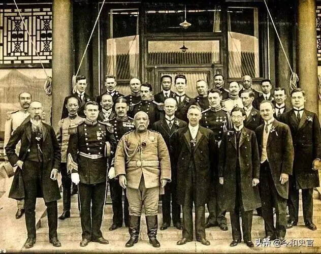
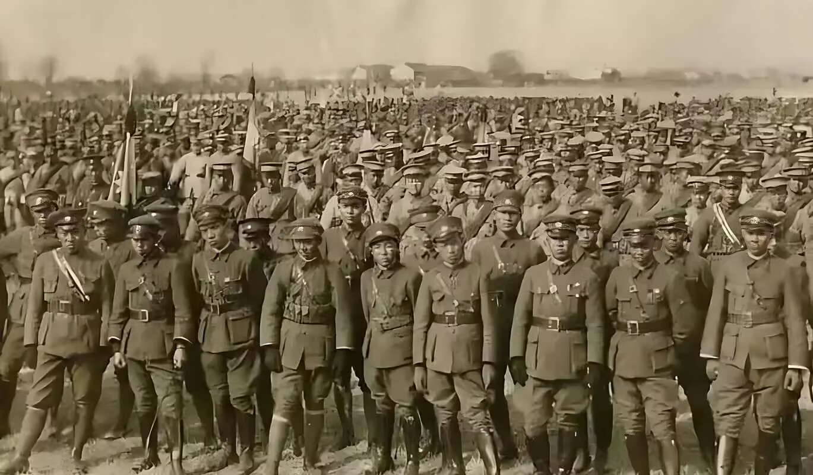
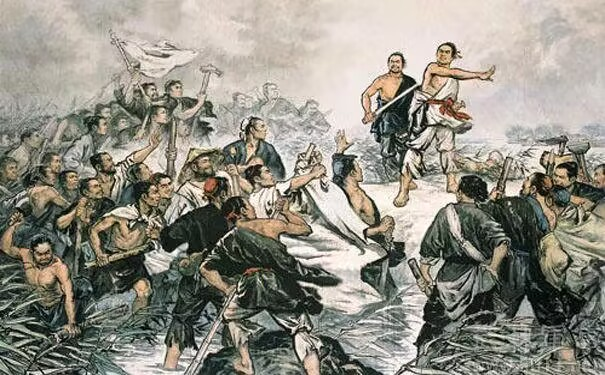

-

五四运动
五四运动，是1919年5月4日发生在北京的一场以青年学生为主，广大群众、市民、工商人士等阶层共同参与的，通过示威游行、请愿、罢工、暴力对抗政府等多种形式进行的爱国运动，是中国人民彻底的反对帝国主义、封建主义的爱国运动，又称“五四风雷”。五四运动是中国近现代史上非常重要的历史事件之一，对于中国的政治、社会、文化等方面都产生了深远...
-

五四运动爆发的直接原因：巴黎和会外交失败
巴黎和会上中国的外交失败：1919年，第一次世界大战结束后，胜利的协约国集团在巴黎召开了一次国际会议，旨在解决战争所造成的问题，以及奠定战后的和平。这次会议被称为巴黎和会。然而，这次和会并没有实现预期的目标，反而造成了许多新的问题和矛盾。其中最引人注目的事件之一是中国山东问题的谈判。中国作为战胜国之一，在和会上反而成为被宰割...
-

五四运动爆发的根本原因一：北洋军阀的黑暗统治
北洋军阀的黑暗统治。对外投靠帝国主义，出卖国家利权；对内掠夺土地和工矿业，增加赋税，人民负担沉重。以袁世凯为首的北洋军阀，是一个代表大地主、大资产阶级利益的庞大的军事政治集团。辛亥武昌起义后，袁世凯先是在帝国主义的支持下，以“拥护共和”的高调骗取资产阶级革命派的信任和妥协，窃取了中华民国临时大总统的职位，继而玩弄权术逼迫南...
-

五四运动爆发的根本原因二：军阀混战
军阀混战，给人民带来极大灾难。随着中国历史进入20世纪初，军阀混战时期成为了其中“混乱”的代表。这段历史时期，各个地方的军阀在互相争斗，腐败严重，民不聊生。这时期中，我们看到了太多的暴力和鲜血，军阀混战对于中华民族的伤害也十分深重。首先，军阀混战导致了无辜百姓的生命财产受到重大损失。这是因为当时军阀们为了争权夺利，经常会发...
-

五四运动爆发的根本原因三：国内阶级矛盾加剧
国内阶级矛盾加剧。阶级矛盾，是指不同阶级之间因经济、政治以及其他方面的利益和要求不同而产生的矛盾。阶级矛盾是阶级产生以来出现的一种社会矛盾。各个阶级在一定的生产方式中，由于对生产资料的关系不同，因而有着不同的利益和要求，形成各种阶级矛盾。狭义指剥削阶级和劳动阶级之间因利害冲突而产生的矛盾。
五 四 运 动 的 主 要 影 响
- 中国政治：无产阶级登上了历史舞台，它领导人民大众展开了翻地反封建的斗争，历史由旧民主主义革命运动过渡到新民主主义革命运动。
- 中国政治：促进了马克思主义在中国的传播，为中国共产党的成立奠定了思想基础。
- 中国经济：不少的国人开始抵制“日货”，抵制外国的生产工业产品，一定程度上促进了民族资本主义的发展，为中国共产党的成立奠定了经济基础。
- 中国思想文化：五四运动举起的民主与科学的两面大旗，动摇了封建思想在中国两千多年的的绝对统治地位。五四运动还促进白话文的兴起，促使中国文化发展到一个新的高峰，也大大的充实了中国文化。
- 中国思想文化：五四运动还是一次独特的思想文化革命，在宣传新思想上也起到很重要的作用。
四 大 领 袖 及 其 五 四 主 要 事 迹
- 陈独秀：作为新文化运动的倡导者和中国共产党早期的主要领导人，陈独秀在五四运动期间发表了多篇文章，包括《关门会议》和《南北代表有什么用处》，号召人民起来反抗。
- 陈独秀：在五四运动当天，他发表了《两个和会都无用》一文，支持学生的爱国行动，并称五四学生运动是“有纪律的抗议”。
- 陈独秀：陈独秀因散发《北京市民宣言》于1919年6月11日被捕入狱，显示了他在五四运动中的积极参与和牺牲精神。
- 胡适：作为新文化运动的推动者和白话文的倡导者，胡适在五四运动期间继续他的思想启蒙工作。
- 胡适：尽管具体事迹较少记录，可以推测他在五四运动中同样扮演了重要角色，尤其是在文化和思想启蒙方面。
- 蔡元培：作为北京大学校长，蔡元培实行“思想自由,兼容并包”的原则，为新文化运动的传播和五四运动的爆发创造了条件。
- 蔡元培：他邀请陈独秀等进步学者到北大任教，推动了新文化运动的发展，为五四运动的爆发奠定了思想基础。
- 李大钊：作为新文化运动中的一员猛将和马克思主义的传播者，李大钊在五四运动中起到了领导作用。
- 李大钊：他发表了《我的马克思主义观》，系统介绍了马克思主义理论，对五四运动和马克思主义在中国的传播产生了重要影响。
五 四 运 动 的 精 神
- 忧国忧民的爱国主义精神。这是五四精神的源泉和核心，体现了对国家和民族前途命运的深切关注与责任感。在当时的历史背景下，这种爱国精神表现为坚决反对帝国主义和封建主义的侵略和压迫，追求民族的独立和解放以及国家的繁荣富强。
- 积极创新、探索科学的进步精神。五四运动是一场思想解放的运动，它鼓励人们勇于探索未知领域，积极创新，推动社会进步和发展。同时，科学也被视为推动国家现代化的重要力量，因此得到了广泛的宣传和推广。
- 反帝反封建的革命精神。五四运动的最终目的是实现中华民族的伟大复兴，这一目标需要通过彻底的反帝反封建斗争来实现。因此，革命精神成为了五四运动中不可或缺的一部分。
- 民主与科学的理性精神。五四先驱者追求真理、批判伪善的事物，强调理性和科学方法的重要性，从而形成了近代历史上前所未有的思想解放运动。这种理性精神也是现代社会的基石之一。
关 于 习 近 平 总 书 记 对 五 四 精 神 传 承 的 讲 话
- 六个“伟大”,习近平这样说五四运动的意义
- [朝闻天下]全国广大青年热议习近平主席讲话 继续发扬五四精神 不辜负伟大时代
- 纪念五四运动100周年大会在京隆重举行 习近平发表重要讲话
- [内蒙古新闻联播]学习习近平总书记“五四”重要讲话精神 牢固树立社会主义核心价值观
- [北京新闻]改革发展年代更需要核心价值观引领——学习贯彻习近平总书记五四重要讲话精神之一
- [新闻30分]赓续五四精神 奋进复兴征程 广大青年热议习近平总书记在中央政治局第十四次集体学习时讲话
- 「习语|“不负青春、不负韶华”」对于青年,习近平总书记有着深深的关切和期盼。五四青年节之际,重温这些温暖的时刻和给人力量的话语
- [纪念五四运动100周年大会]习近平总书记发表重要讲话